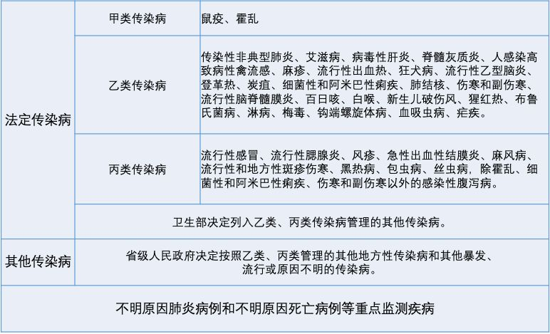
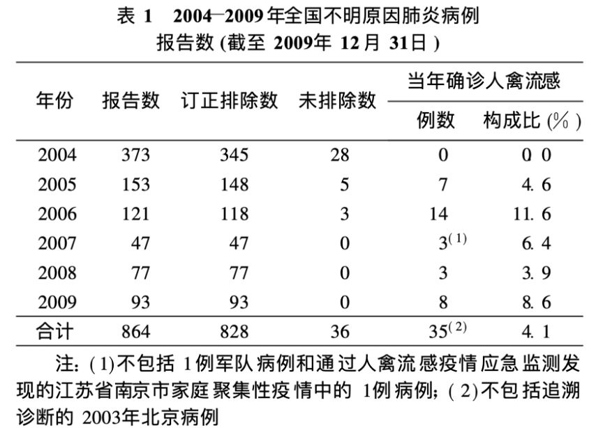

武汉确认27例不明原因肺炎是病毒性肺炎，不确定是SARS
原文链接 备份链接 共27例病例，大多是武汉华南海鲜城经营户。7例病情危重，其余病情可控，有2例病情好转拟近期出院。 不明原因肺炎，是2003年SARS事件后，对SARS病例和人禽流感病例及其它传染性呼吸道疾病监测中用的概念。 …


武汉卫健委最新通报，“不明原因肺炎”已排除SARS和MERS，但病原体仍未明确。
武汉患者已增至59例，重症7例，均在接受隔离治疗，无死亡病例。
香港特区等地加强了对来自武汉人员的监测，香港每日公布疑似案例，最新数字是16例。新加坡4日发现1个疑似病例，5日证实与武汉肺炎无关。
本次武汉肺炎呈现明显的聚集性特征，类似特征的疫情近年来时有发生，但都没有引起大规模的公共卫生事件。

武汉市“不明原因肺炎”疫情持续引发关注。目前仍未明确是何种病原体。武汉卫健委1月5日晚就此发布第三份通报，表示已排除流感、禽流感、腺病毒、严重急性呼吸道综合征（SARS）和中东呼吸综合征（MERS）。
截至1月5日8时，武汉市共报告符合不明原因的病毒性肺炎诊断患者59例，重症7例（12月31日首份通报中，患者是27例，7例病情严重；1月3日通报中，患者44例，重症11例），其余患者生命体征总体稳定。目前所有患者均在武汉市医疗机构接受隔离治疗，无死亡病例。

从武汉前往其他地区的人员中，也发现一些疑似肺炎病例。其中香港特区监测到的人数最多，截至1月5日中午12时，香港卫生署共接到16起报告。经检测，8例为流感（7例甲流），1例其他疾病，1例冠状病毒229E感染（非SARS），6例未检出明确病毒。
由于病原鉴定和病因溯源工作正在进行中，尚不能确定从武汉到香港的相关病例与武汉出现的不明原因肺炎病例存在关联。
武汉卫健委的三次通报均表示，此次疫情未发现明显的人传人证据，未发现医务人员感染。
曾在2003年参与SARS病原调查和诊断的病毒学研究专家管轶日前在接受财新采访时表示，相信官方对于病毒类型已经有了初步判断，因为病原鉴定中的核酸检测大约2至3天就可以获得结果，但病因溯源需要进行血清学检测和确认，需要2至4周。
此次疫情的关联地——位于武汉市江汉区的华南海鲜市场已经休市整顿。相关部门正在开展环境卫生处置和进一步的卫生学调查。管轶认为，先集中病人控制传染源，再寻找动物传染源堵漏洞的方向是正确的。
据2019年9月的一则报道，国庆前夕，武汉市区两级市场监管部门曾对华南海鲜市场售卖虎斑蛙、蛇、刺猬等动物的商户进行排查。说明该市场有这些野生动物销售。此次疫情是否与市场内的野生动物相关，也要等官方调查结果出来才能确定。
最新疫情：报告患者持续增加，重症减少
据武汉卫健委1月5日晚间的通报，截至当日8时，共发现符合不明原因的病毒性肺炎诊断患者59例，重症7例，相比两天前的通报，减少了4例。在59例患者中，最早发病时间为2019年12月12日，最晚发病时间为12月29日；已经追踪到163名密切接触者并行医学观察。
此次武汉所有不明原因肺炎患者都集中在武汉市金银潭医院（原武汉市医疗救治中心）隔离治疗。该院是武汉地区唯一一家省市共建的、具有近百年历史的公共卫生医疗救治基地。

△ 图片来源：武汉市金银潭医院官网
据新京报此前报道，目前金银潭医院收治的疫情相关患者中，并不全都是确诊的肺炎患者，也包括了一些只有感冒症状，但因为近期和华南海鲜市场有过接触的疑似病例。这些病人大多是武汉市内其它医院回溯过往病例筛查出的疑似感染者，送到金银潭医院来做进一步确认。医院方面表示，在隔离区内，肺炎患者和非肺炎患者会分开住，非肺炎患者如果症状好转，三天以后就可以出院。
武汉卫健委12月30日发布的红头文件要求：未经授权，任何单位、个人不得擅自对外发布救治信息。1月1日下午，武汉警方通报，有8人因发布、转发关于武汉市肺炎疫情的不实信息，被依法查处。
武汉不明原因肺炎疫情公布后，香港特区、澳门特区、台湾地区乃至新加坡，都在入境口岸加强了对来自武汉人员的监测。
1月3日开始，香港特区政府每日公布加强监测下的疑似肺炎个案数字。过去14天内曾到访武汉并有发烧或肺炎症状的患者即纳入统计，截至1月5日中午12时，共监测到病例16例。

△ 香港特区卫生署官网截图
1月4日，香港特区政府公布《对公共卫生有重要性的新型传染病准备及应变计划》并同时启动“严重”应变级别。该计划包含三个应变级别：戒备、严重及紧急。严重级别对应风险为中等。
澳门卫生局报告，从1月1日至今，共接获4起发病前14天曾到访武汉，而出现发烧和呼吸道症状的病例通报，但已全部确诊为流感或普通感冒。
台湾地区卫生部门自去年12月31日起，启动由武汉直航赴台班机的登机检疫，并且每天发布关于关于武汉肺炎疫情的最新信息。1月5日公布，共查出8名症状轻微旅客，经评估后返家休息。其中2人诊断为流感，1人为一般感冒、1人已退烧、1人为支气管炎并已退烧，另3人由地方卫生当局持续追踪关怀。
此外，新加坡卫生部1月4日宣布，该国出现首宗疑似不明肺炎病例，患者为三岁的中国女童，曾到访武汉。不过据最新消息，该病例已证实与武汉肺炎无关。
新加坡卫生部要求，所有从武汉飞往新加坡的旅客，都必须在抵达樟宜机场时接受体温检测。随着监测的持续，新加坡也可能出现新的疑似与武汉肺炎有关的病例。
不明原因肺炎历年都有
2003年“非典”流行之后，国家卫健委的前身卫生部为了筛查可能的SARS病例和人感染禽流感病例及其它传染性呼吸道疾病，早期发出预警并采取相应的防控措施，制定了《全国不明原因肺炎病例监测实施方案（试行）》。2007年，该方案升级为《全国不明原因肺炎病例监测、排查和管理方案》。
根据方案：相关病例要同时具备以下4项条件：
1、发热（腋下体温≥38℃）；
2、具有肺炎的影像学特征；
3、发病早期白细胞总数降低或正常，或淋巴细胞分类计数减少；
4、经规范抗菌药物治疗3-5天，病情无明显改善或呈进行性加重。
2006年5月，卫生部印发的《传染病信息报告管理规范》中，规定了三种需要报告的病种，“不明原因肺炎病例和不明原因死亡病例等重点监测疾病”包含其中，排在法定传染病和其他传染病之后。

在“后非典”时期，不明原因肺炎监测对中国人感染禽流感病例的早期发现和报告起到了重要作用。根据《疾病监测》杂志2010年发表的《2004-2009年中国不明原因肺炎病例报告情况分析》，5年当中，全国31个省级行政区通过疾病监测信息报告管理系统、电话和传真报告的不明原因肺炎病例共864例，其中确诊人感染禽流感病例35例（同时期全国总共发现38例确诊人感染禽流感病例），排除不明原因肺炎诊断为其他疾病的793例，截至2009年尚未排除不明原因肺炎诊断的有36例。

在这一统计周期内，2004年4～5月北京市和安徽省的小规模SARS疫情、2005～2006年冬春季和2009年初的人感染禽流感疫情期间，有明显的不明原因肺炎报告高峰。而在其余大多数月份，全国每月的病例报告数均不超过10例。
查询知网可以看到，近年来各地均有一些不明原因肺炎的监测报告，但这些病例都没有引起大规模的公共卫生事件。

对比历史报告数据，这一次武汉突然出现27个病例（截至1月3日下午，病例上升至44例），确实稍显异常。
不过，此次武汉不明原因肺炎大部分为华南海鲜城经营户，呈现出明显的聚集性特征。类似的聚集性不明原因肺炎疫情，近年来时有发生。
查阅相关资料发现，2018年5-6月，北京市房山区某小学曾出现26例聚集性不明原因肺炎疫情，最后判定为支原体感染。2014年3月上旬，山东威海胸科医院也集中收治了某医院39例临床表现相似的聚集性不明原因肺炎医务人员，其中37例经过常规治疗后恢复正常。
值得注意的是，有一些研究指出，中国不明原因肺炎报告病例数较实际情况偏少，且有一定延迟。主要原因是不明原因肺炎监测针对的是人感染禽流感和SARS，这两种疫情对经济社会稳定影响重大，各级卫生机构在报告时都会慎之又慎，以免引起不必要的恐慌。
不是SARS，病原可能是什么？
12月30日晚曾有一张手机拍下的病原检测单在朋友圈中流传，上面显示的检出高置信度阳性指标包含SARS冠状病毒。该信息一度引起高度紧张。目前官方通报已经排除是SARS的可能性。
导致感染性疾病的病原微生物包括细菌、病毒、真菌、寄生虫等。细菌是微米级颗粒，在普通显微镜下就能看到。而病毒是纳米级，需要借助电子显微镜才能观察到。
从生命的形态上，病毒是遗传物质和蛋白质裹在一起的一个生物大分子。一般来说，病毒检测要先做分子检测，再在显微镜下通过形态学观察，确认病毒。
病原微生物分子检测方法众多，但这些方法都各有弊端。免疫学方法操作简单，但由于病原体种类繁多，已研发的抗原、抗体数量远远不能满足需求。基因芯片技术较新，但只能对已知的病原体基因组进行意向性筛查，而无法检测新的未知病原体。
获得病原体的活体也是一大难点：病原体的体外培养耗时普遍较长，操作步骤繁琐，且绝大多数病原体不可培养。
目前全球感染性疾病的发病率有所上升，病原体呈现多样化和复杂化的趋势。各种新发和再发的感染性疾病、不易发现的多重感染以及不明病因的发热病例增多，但据统计，约70%的感染性疾病患者都无法确定病原体信息。
当年SARS病毒的确认也经历了一番曲折。2002年底，中国广东等地出现了多例原因不明的、危及生命的呼吸系统疾病。随后，越南，加拿大和中国香港等地也先后报道了类似病例。世卫组织将此类疾病命名为“严重急性呼吸道综合征（SARS）”。随后世界各国实验室都致力于发现这种疾病的病原体。2003年3月，香港大学和美国疾病预防控制中心先后在SARS病人的样本中分离出一种病毒，该病毒粒子外周有冠状排列的纤突，在电子显微镜下看起来就像一顶中世纪欧洲帝王的王冠，根据形态学特征和遗传信息，科学家认为这种新型的冠状病毒就是SARS的致病病原。2013年4月，世卫组织在各方面研究成果基础上，正式将其命名为SARS冠状病毒。

SARS冠状病毒属于冠状病毒科，其家族成员众多。冠状病毒也是成人普通感冒的主要病原之一。目前已经发现的冠状病毒，能感染人类的有6种，分别为20世纪60年代发现的人冠状病毒HCoV-229E和HCoV-OC43，2003年出现的SARS冠状病毒SARS-CoV，2004年发现的人冠状病毒HCoV-NL63，2005年新发现的人冠状病毒HCoV-HKU1以及2012年7月在中东地区出现的新型人冠状病毒HCoV-EMC（该病毒引发的疾病后来被命名为中东呼吸综合征，英文简称MERS）。
此次武汉不明原因肺炎的病原检测，武汉卫健委的最新通报中，尚未排除冠状病毒的可能。
据此前媒体报道，中国科学院武汉病毒研究所正在地方卫生管理部门的指挥下做相关病原检测方面工作。该所拥有我国唯一一个P4（生物安全最高等级）生物实验室。相关负责人表示，如果需要，会按规定要求启动P4相关流程。
吴靖|撰稿
微信号：1136352312
吴晔婷|撰稿
微信号：wytlucky19
毛晓琼|撰稿
微信号：234379189
刘冉|责编
微信号：fooorest


5个质子放疗许可全给了公立医院，91个甲类设备证民营只拿到3个

我们尊重原创版权，未经允许请勿转载。
授权转载
郑琪 微信号: 1281949389
商务合作
上海：leslee 13916263824
北京：Jessie 13911125922
线索爆料、意见反馈，加入核心读者社群
请扫码联系健闻君

让朋友们看到你也在看
↓↓↓
原文链接 备份链接 共27例病例，大多是武汉华南海鲜城经营户。7例病情危重，其余病情可控，有2例病情好转拟近期出院。 不明原因肺炎，是2003年SARS事件后，对SARS病例和人禽流感病例及其它传染性呼吸道疾病监测中用的概念。 …
原文链接 备份链接 第一财经 2019-12-31 10:16:19 听新闻 [* 一财大政 ](/author/100000391.html) 12320热线工作人员表示，武汉疾控部门第一时间前往救治医院采集患者标本，具体是何种 …
原文链接 备份链接 第一财经 2019-12-31 13:39:50 听新闻 [* 一财区域 ](/author/100000392.html) 华南海鲜市场是武汉最大的海鲜批发市场。据多方接受采访的人士称，该市场昨晚进行了例行消 …
原文链接 备份链接 今天（2月4日）天气依然很好。武汉市民生活还是很平稳。闷是有一点，但只要活着，闷是能忍住的。 下午突然听到有人再度恐慌，去超市抢购，说是担心超市关门，断了吃喝。我想这个大概不会吧？市府似乎就此发了一个声明，即保证超市不 …
原文链接 备份链接 3月3日。 依然天阴，有点冷嗖嗖的。我在郊区的邻居一早发给我照片。留言说，你家的海棠开花了，你的微信文被封了。微信内容被封，我已习惯。但海棠开花却实在让人高兴。去年夏秋，一直大旱。树叶全枯并且掉光，我很担心这棵树会死 …